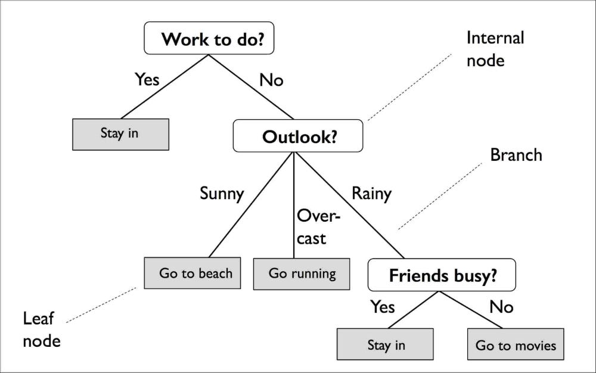

6 Classification I
6.1 Summary
This week’s content focused on classification in remote sensing and - since there’s a sequel to come - more specifically, the ways of using classified data and types of classification.
A quick recap on research areas where remotely sensed data could be used:
- Urban expansion
- Air pollution and Land Use Land Cover (LULC)
- Urban green spaces
- Monitoring forests and illegal logging
- Forest fires
All of the studies in fields mentioned above would utilise Earth Observation (EO) data to extract land cover information - how exactly can we do that?
Expert systems = a computational system designed to tackle problems that typically necessitate human intelligence by leveraging human knowledge. But how can human knowledge be replicated by a computer?
Here’s where machine learning comes in.
Machine learning = a branch of artificial intelligence focused on developing algorithms that enable computers to learn from and make predictions or decisions based on data.
6.1.1 Types of classification used in remote sensing
6.1.1.1 Classification and regression trees (CART) classification
- Classification trees categorise data into multiple discrete categories, each having distinct values.

When constructing a decision tree, the terminal nodes may consist of a blend of different categories, resulting in impurity - quantify this using Gini Impurity. The node with the lowest impurity is placed at the top of the tree as the root for initiating decision making. Subsequently, the Gini impurity is utilised at each branch to further partition the nodes. As splitting is no longer necessary, the nodes transition into leaves, and the output is determined by the majority vote.
- Regression trees predict continuous dependent variable.
A few considerations:
- How do we choose where the breaks would be in our data? Do we consider residuals?
- What happens if linear regression is not suitable for the data?
- Partition the data into sections based on specific thresholds (nodes) and compute the sum of squared residuals;
- Examine the sum of squared residuals (SSR) across various thresholds, identify the one with the lowest SSR to establish as the root of the tree. Repeat this process.
Notes on overfitting:
- Ideally, our best model would have low bias (i.e., small difference between predicted value and true value) and low variance (i.e., low variability of model for a given point).
- To prevent overfitting, we can either prune weakest links or limit how trees grow.
6.1.1.2 Random Forests
Random forests is a multitude of classification decision trees. They are created by constructing multiple decision trees from bootstrapped samples of the training data and using random subsets of features for each tree’s node splitting.

6.1.2 Image classification
Convert each pixel in the image into one of predetermined categorical classifications, then proceed with either a supervised or unsupervised classification approach.
6.1.2.1 Unsupervised
Usually referred to as clustering or k-means: distribute points randomly or uniformly throughout the spectral feature space or the first principal component analysis (PCA), and repeat until reaching a specified number of iterations or when no pixels are left unallocated.
6.1.2.2 Supervised
Recent studies utilise machine learning or expert systems (such as Support Vector Machines (i.e., linear binary classifier), Neural Networks (NN)) and spectral mixture analysis.
6.2 Applications
While there’s countless ways in which the previously mentioned models could be applied to, I have chosen to review a few studies that specifically used Random Forests classifier for remotely sensed image classification, mostly because I have had the least interaction with this classifier in lectures before and was keen to see how researchers have been using it recently.
(Guo et al. 2011) published a study that aimed to assess the importance of input features in urban mapping by utilising a multi-source framework combining aerial lidar (multi-echo and full waveform) and multispectral image data. It employed the Random Forests algorithm as a classifier due to its efficiency with large datasets and ability to provide measures of feature importance for each class. By using the margin theory as a confidence measure, the study aimed to confirm the relevance of input features for urban classification. The quantitative results affirmed the significance of integrating optical multispectral and lidar data, highlighting the importance of full-waveform lidar features for distinguishing between building and vegetation areas. This research is crucial for urban scene recognition and urban policy development, as it provides insights into effective methods for utilising advanced technologies in urban mapping and classification.
Almost poetic - the article by (Linhui, Weipeng, and Huihui 2021) aimed to improve the accuracy of classifying forest types in the Laoshan construction area of the Maoershan Forest Farm, Heilongjiang Province, using remote sensing images and a Random Forests classifier. It addressed the challenge of low accuracy in extracting forest type information from high-resolution images and the lack of effective identification methods. By employing a multi-source dataset including GF-2 remote sensing images, aerial RGB images, and forest inventory data, the study utilised multiscale segmentation and feature space construction to establish an object-oriented random forest (RF) scheme. Comparative experiments with the support vector machine (SVM) classifier demonstrated that the RF scheme achieved higher overall accuracy and kappa coefficient, indicating its effectiveness in improving the classification accuracy of forest types. This research contributes to advancing land cover classification and land use/land cover (LULC) monitoring by providing a more accurate and reliable method for identifying and monitoring forest resources.